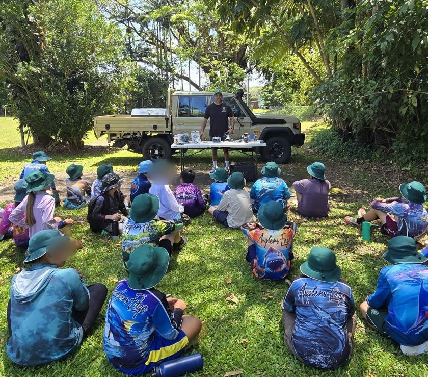
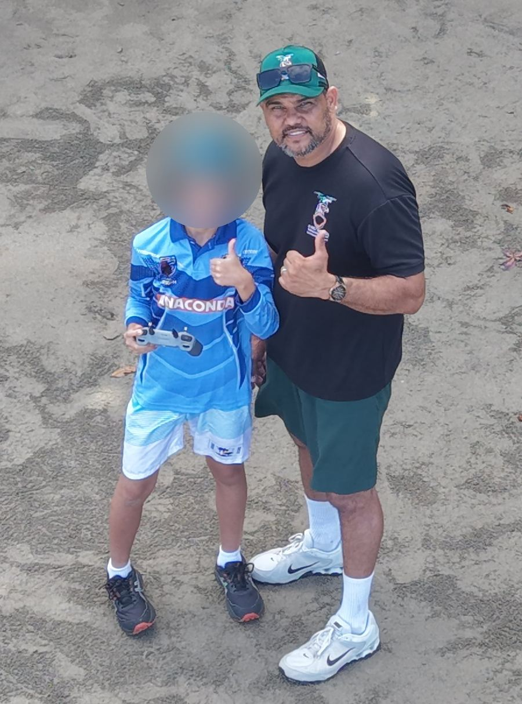

First Flight
CASA safety rules, the parts of a drone, a pre-flight check, and a first supervised flight.
From Year 3Six levels, from a student's first supervised flight to planning a career in drones and data. Every session is run by a CASA-certified Chief Remote Pilot, with an online workbook, marking and a certificate for each student.
Each level builds on the last. Students move up when the instructor signs them off as ready, not just when they've attended.
CASA safety rules, the parts of a drone, a pre-flight check, and a first supervised flight.
From Year 3Pilot, spotter and instructor roles, weather and no-fly zones, emergencies, and an independent pre-flight check.
Planning a shot list, photo or video, and reviewing footage to judge whether it's usable data.
Planning a mapping mission, checking coverage, and turning overlapping photos into a measurable map of Country.
How AI reads drone images, labelling and testing it honestly, the ranger check, and who owns the data.
Drone and data jobs on Country, CASA's steps from ARN to RePL, a portfolio and a next-step plan. Students aged 16+ complete their own CASA operator accreditation in class.
Accreditation 16+Ngarrakan, the wedge-tailed eagle · Ngardiji, wisdom and vision. AI First Nations drone knowledge on Country, Year 3 to Year 12, delivered under CASA ReOC CASA.ReOC.8979.
Seven levels with the same six steps at every level: Story, Rules, Colour & Create, Match-up, Quiz and Certificate. An animated story follows Pop Pop, Kiki and KK as they grow into drone operators, and Ngarrakan shares what it knows with the other animals of Country. Every lesson follows CASA's drone safety rules, and every level also prints, for communities with no internet, computers or iPads.
Printable packs (PDF): Level 1 · Year 3 · Level 2 · Year 4 · Level 3 · Year 5 · Level 4 · Year 6 · Level 5 · Year 7–8 · Level 6 · Year 9–10 · Level 7 · Year 11–12
About the certificates. AI First Nations certificates are participation and readiness records. They are not a CASA licence, qualification or authorisation to fly. Students who want to fly for work later need CASA's own steps: operator accreditation and/or a Remote Pilot Licence from an approved provider.

29 out of 29 Year 6 students passed Drone Class 101 at a four-day school camp with Goondoi Rangers in October 2026.
Run with Goondoi Rangers on Country. Students learn to fly safely, and AI First Nations films the camp so the school has videos to share with families. Faces are only shown with photo consent.

| Option | What it covers | Price (ex GST) |
|---|---|---|
| Drone Class, one day | Any level, up to 30 students, workbook and certificates | [PRICE] |
| Camp filming | Per filming day, edited videos | [PRICE] |
| Full camp package | Drone Class and filming across a multi-day camp | [PRICE] |